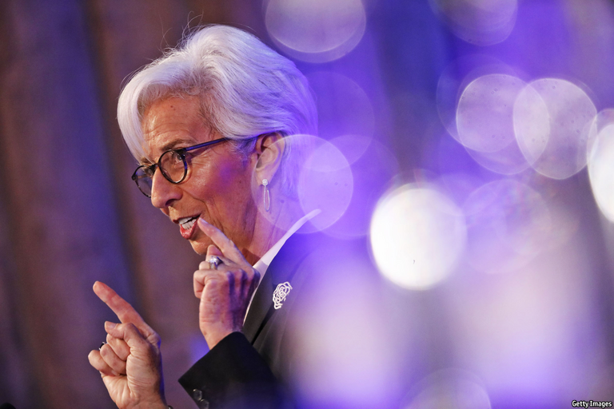
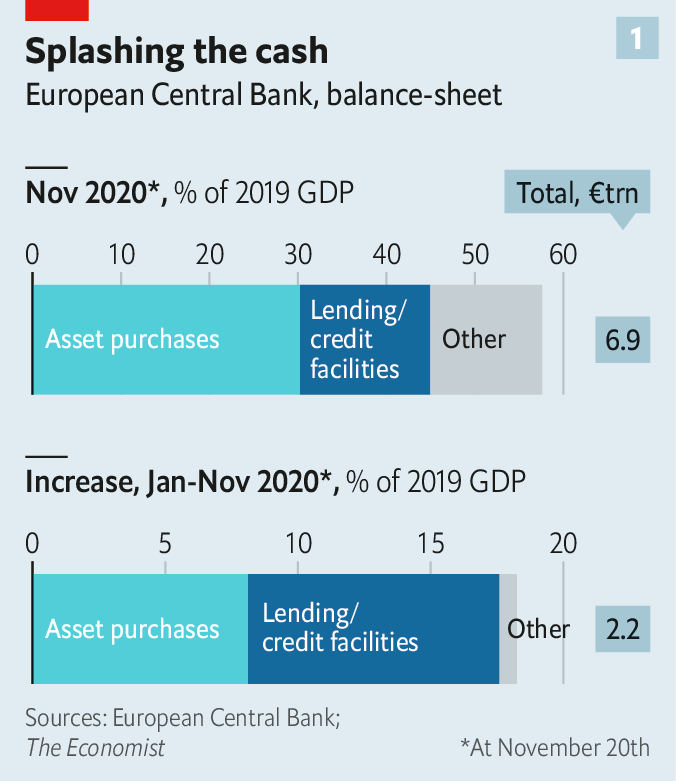
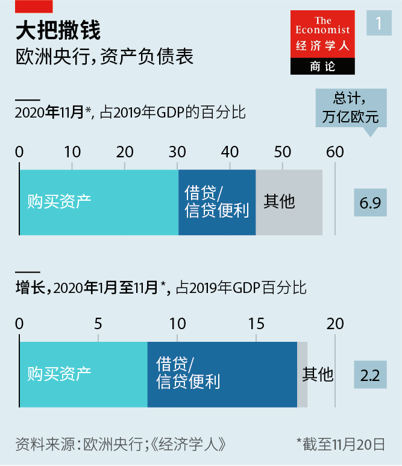
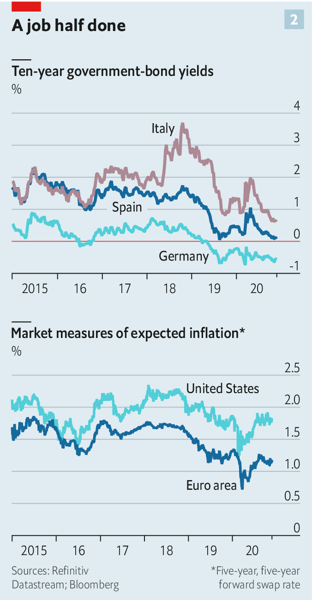
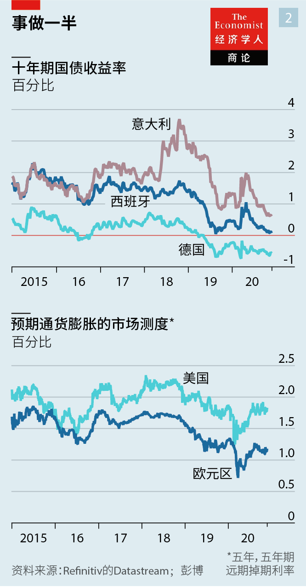

2020-12-13T15:40:18+00:00
Christine Lagarde
克里斯蒂娜·拉加德
克里斯蒂娜·拉加德
Culture shock
文化冲击
文化衝擊
The ECB’s boss is taking the bank out of its comfort zone—and into hers
欧洲央行行长正带领该行走出它的舒适区——进入她的舒适区
歐洲央行行長正帶領該行走出它的舒適區——進入她的舒適區
CHRISTINE LAGARDE has been an outsider before. Speaking to The Economist, she relishes the memory of shaking up bureaucrats—“men in grey suits”—when she took over as France’s finance minister in 2007. She even installed a “psychedelic” carpet in her office, to get them to look up from the floor. Now Ms Lagarde, who then went on to run the IMF, is shaking up the idea of what it is to be a top central banker.
克里斯蒂娜·拉加德（Christine Lagarde）过去就曾是个局外人。她愉快地对本刊回忆起了2007年接任法国财政部长时如何震撼了那些官僚——“穿灰色西装的男人们”。她甚至在自己的办公室里铺了一块“让人头晕目眩”的地毯，让他们没法总是低头看地板。如今，在执掌国际货币基金组织（IMF）后，她正在撼动央行行长的固有形象。
克里斯蒂娜·拉加德（Christine Lagarde）過去就曾是個局外人。她愉快地對本刊回憶起了2007年接任法國財政部長時如何震撼了那些官僚——“穿灰色西裝的男人們”。她甚至在自己的辦公室里鋪了一塊“讓人頭暈目眩”的地毯，讓他們沒法總是低頭看地板。如今，在執掌國際貨幣基金組織（IMF）後，她正在撼動央行行長的固有形象。
The main prerequisite used to be a degree of nerdiness: just think of Janet Yellen, a former chairwoman of the Federal Reserve and Joe Biden’s choice for treasury secretary; Ben Bernanke, her predecessor at the Fed; or Mervyn King, a former governor of the Bank of England. All spent decades in academia. By contrast Ms Lagarde, who has been the head of the European Central Bank (ECB) for just over a year, is not an economist but a lawyer and a former executive and politician. She brings a glittering CV and a high public profile to the job, but is probably more comfortable rubbing shoulders with heads of state than participating in a research seminar.
以前做央行行长的主要条件是得有点学究范儿：想想美联储前主席、拜登选择的财政部长珍妮特·耶伦（Janet Yellen）、她在美联储的前任本·伯南克（Ben Bernanke），或者英国央行前行长默文·金恩（Mervyn King）。这些人都在学术界工作过数十年。相比之下，担任欧洲央行行长仅一年多的拉加德不是经济学家，而是律师出身，还曾担任高管和从政。她加入央行前履历辉煌，知名度很高，但与参加研讨会相比，她可能在和国家元首打交道时更如鱼得水。
以前做央行行長的主要條件是得有點學究范兒：想想美聯儲前主席、拜登選擇的財政部長珍妮特·耶倫（Janet Yellen）、她在美聯儲的前任本·伯南克（Ben Bernanke），或者英國央行前行長默文·金恩（Mervyn King）。這些人都在學術界工作過數十年。相比之下，擔任歐洲央行行長僅一年多的拉加德不是經濟學家，而是律師出身，還曾擔任高管和從政。她加入央行前履歷輝煌，知名度很高，但與參加研討會相比，她可能在和國家元首打交道時更如魚得水。
On the face of it, Ms Lagarde and the ECB have had a decent year. The bank has acted decisively, avoiding the mistakes of the financial crisis of 2007-09 and the sovereign-debt woes of 2010-12. Since the start of the year it has injected stimulus of €2.2trn ($2.6trn) into the economy (see chart 1). In contrast with the austerity of a decade ago, fiscal policy is acting in concert with monetary easing, including at the EU-wide level. The new opportunity to help co-ordinate monetary policy and government spending plays to Ms Lagarde’s strengths. Yet it is precisely her willingness to venture into areas that most central bankers consider political terrain that is causing some controversy among the experts.
表面上看，拉加德和欧洲央行过去一年战绩不错。该行行动果断，避免了重蹈2007至2009年金融危机和2010至2012年主权债务危机的覆辙。自年初以来，它已注资2.2万亿欧元（2.6万亿美元）刺激经济（见图表1）。相比十年前的紧缩，如今财政政策是与货币宽松协同实施的，在整个欧盟范围内也是如此。帮助协调货币政策和政府支出的新机遇可让拉加德发挥强项。然而，正是因为她愿意冒险进入大多数央行官员眼中的政治领域，才在专家之中引发了一些争议。
表面上看，拉加德和歐洲央行過去一年戰績不錯。該行行動果斷，避免了重蹈2007至2009年金融危機和2010至2012年主權債務危機的覆轍。自年初以來，它已注資2.2萬億歐元（2.6萬億美元）刺激經濟（見圖表1）。相比十年前的緊縮，如今財政政策是與貨幣寬鬆協同實施的，在整個歐盟範圍內也是如此。幫助協調貨幣政策和政府支出的新機遇可讓拉加德發揮強項。然而，正是因為她願意冒險進入大多數央行官員眼中的政治領域，才在專家之中引發了一些爭議。
The ECB’s ammunition was sorely depleted even before covid-19 struck. Its benchmark deposit rate was -0.5%, and it had been buying government and corporate bonds through its quantitative-easing (QE) scheme since 2015. But the bank warded off a credit crunch earlier this year by ripping up self-imposed rules. Instead of buying a country’s assets in rough proportion to the size of its GDP, it has bought more of those of Italy and Spain. The ECB has also expanded the generosity of its long-term loans to banks, paying them up to 1% if they continue to lend. That, together with government guarantees, has kept credit from seizing up, even as a second wave of infections and lockdowns make a double-dip recession seem inevitable. An ECB survey published on November 24th found that access to finance was towards the bottom of small firms’ list of anxieties.
即使是在新冠疫情爆发之前，欧洲央行的弹药就已经严重枯竭。它的基准存款利率为-0.5％，自2015年以来一直在通过量化宽松计划购买政府和企业债券。但它于今年早些时候打破了自己设定的规则，避免了信贷紧缩。它没有按照与一国GDP大致相称的比例购买资产，而是买入了更多意大利和西班牙的资产。它还延长了对银行长期贷款的优惠，如果它们继续放贷，利率可低至-1%。这种操作，再加上政府的担保，使得在第二波疫情和封锁似乎让二次衰退不可避免之时，信贷也一直没有冻结。欧洲央行11月24日发布的一项调查发现，融资渠道是中小公司最少担心的问题之一。
即使是在新冠疫情爆發之前，歐洲央行的彈藥就已經嚴重枯竭。它的基準存款利率為-0.5％，自2015年以來一直在通過量化寬鬆計劃購買政府和企業債券。但它於今年早些時候打破了自己設定的規則，避免了信貸緊縮。它沒有按照與一國GDP大致相稱的比例購買資產，而是買入了更多意大利和西班牙的資產。它還延長了對銀行長期貸款的優惠，如果它們繼續放貸，利率可低至-1%。這種操作，再加上政府的擔保，使得在第二波疫情和封鎖似乎讓二次衰退不可避免之時，信貸也一直沒有凍結。歐洲央行11月24日發布的一項調查發現，融資渠道是中小公司最少擔心的問題之一。
All this, however, has done little to revive the outlook for inflation. The bank itself expects annual inflation of only 1.3% by 2022. Market participants are even gloomier (see chart 2). It is becoming harder to believe that the ECB can do much more by itself. The Economist spoke to executives from five of the euro area’s biggest banks. None thought the ECB’s cheap funding alone would stir demand for credit, or encourage banks to lend to risky prospects. Ms Lagarde insists stimulus is “not exclusively a fiscal business”, and that the ECB can still do its bit. But in a speech on November 11th she made a forceful case for further fiscal action.
然而，所有这些对改善通胀的前景无济于事。欧洲央行自己的预计是，到2022年，年通胀率将仅为1.3％。市场参与者的看法甚至更悲观（见图表2）。人们越来越难相信欧洲央行自己还能再做些什么。本刊采访了欧元区五家大银行的高管。他们都不认为欧洲央行仅凭廉价的资金就能激起对信贷的需求，或者能鼓励银行放贷给高风险项目。拉加德坚称刺激措施“不仅仅是财政的事”，认为欧洲央行仍可发挥自己那部分作用。但在11月11日的一次讲话中，她极力主张进一步采取财政措施。
然而，所有這些對改善通脹的前景無濟於事。歐洲央行自己的預計是，到2022年，年通脹率將僅為1.3％。市場參與者的看法甚至更悲觀（見圖表2）。人們越來越難相信歐洲央行自己還能再做些什麼。本刊採訪了歐元區五家大銀行的高管。他們都不認為歐洲央行僅憑廉價的資金就能激起對信貸的需求，或者能鼓勵銀行放貸給高風險項目。拉加德堅稱刺激措施“不僅僅是財政的事”，認為歐洲央行仍可發揮自己那部分作用。但在11月11日的一次講話中，她極力主張進一步採取財政措施。
There have been two criticisms levelled at Ms Lagarde. One is that communication slip-ups over the past year show that she has only a weak grasp of the technical detail of monetary policy. That may in part reflect economists’ snootiness. But her missteps did indeed move markets. In March her comment that the ECB“was not here to close spreads” sent Italian government-bond yields soaring. In September her seeming indifference to a strengthening euro and its impact on inflation meant the currency only rose further against the dollar. Both were followed the next day by an explanatory blog post from Philip Lane, the bank’s accomplished chief economist—seeming to correct the president’s words.
对拉加德的批评有两种。一是过去一年的沟通失误表明她对货币政策的技术细节理解不足。这种批评可能在一定程度上反映出经济学家的傲慢，但她的过失确确实实影响了市场。今年3月，她评论称欧洲央行“不是来收窄利差的”，此言一出，意大利国债收益率飙升。9月，她对走强的欧元及其对通胀的影响显得无动于衷，结果欧元兑美元汇率进一步上升。这两次沟通失误后的次日，老练的欧洲央行首席经济学家菲利普·莱恩（Philip Lane）都在博客上发帖做了说明，似乎是在纠正拉加德的话。
對拉加德的批評有兩種。一是過去一年的溝通失誤表明她對貨幣政策的技術細節理解不足。這種批評可能在一定程度上反映出經濟學家的傲慢，但她的過失確確實實影響了市場。今年3月，她評論稱歐洲央行“不是來收窄利差的”，此言一出，意大利國債收益率飆升。9月，她對走強的歐元及其對通脹的影響顯得無動於衷，結果歐元兌美元匯率進一步上升。這兩次溝通失誤後的次日，老練的歐洲央行首席經濟學家菲利普·萊恩（Philip Lane）都在博客上發帖做了說明，似乎是在糾正拉加德的話。
Ms Lagarde is only too aware of the fact that markets hang on her every word, and now carefully watches what she says. In order to stress collective decision-making, blog posts by Mr Lane and others on the bank’s executive board will no longer appear immediately after a press conference. Some wonks reckon she has improved markedly on the job. Still, it is hard to imagine her becoming a conviction rate-setter.
拉加德很清楚市场会紧盯她的每一个用词，现在已言语谨慎。为了强调决策是集体制定的，每次新闻发布会之后，莱恩和欧洲央行其他执行委员会成员都不会再立即发帖。一些学究认为她在工作上进步明显。尽管如此，很难想象她会成为一名坚定的利率制定者。
拉加德很清楚市場會緊盯她的每一個用詞，現在已言語謹慎。為了強調決策是集體制定的，每次新聞發布會之後，萊恩和歐洲央行其他執行委員會成員都不會再立即發帖。一些學究認為她在工作上進步明顯。儘管如此，很難想象她會成為一名堅定的利率制定者。
Where she does have conviction is on matters such as climate change and gender equality, subjects that she promoted while at the IMF, to which grey-suited monetary policymakers generally give a wide berth—and which are the source of the second concern about her approach to central banking. It is instructive to compare Ms Lagarde’s speeches and interviews over the past year with those of Mario Draghi, her predecessor. Though “inflation” has featured 190 times, she is half as likely to mention it as Mr Draghi did in 2018 and 2019. By contrast, Ms Lagarde has mentioned “climate change” 80 times—compared with just seven across Mr Draghi’s entire eight-year term.
她在气候变化和性别平等方面倒是有坚定的信念，她在IMF时就推动过这些议题。那些穿灰色西装的货币政策制定者通常对它们敬而远之，而这些议题也引来了对她主持央行工作的第二个担忧。把拉加德过去一年的讲话和访谈与她的前任马里奥·德拉吉（Mario Draghi）比较一下，很能说明问题。尽管她提到“通胀”这个词有190次之多，却也只是德拉吉在2018年和2019年提及次数的一半。拉加德提到过80次“气候变化”，而德拉吉在整个八年任期中只提过七次。
她在氣候變化和性別平等方面倒是有堅定的信念，她在IMF時就推動過這些議題。那些穿灰色西裝的貨幣政策制定者通常對它們敬而遠之，而這些議題也引來了對她主持央行工作的第二個擔憂。把拉加德過去一年的講話和訪談與她的前任馬里奧·德拉吉（Mario Draghi）比較一下，很能說明問題。儘管她提到“通脹”這個詞有190次之多，卻也只是德拉吉在2018年和2019年提及次數的一半。拉加德提到過80次“氣候變化”，而德拉吉在整個八年任期中只提過七次。
Climate change, according to Ms Lagarde, is an element not just of the ECB’s “secondary” objective—which is to support the EU’s economic policies. More controversially, she sees it as having a bearing on the bank’s primary mandate of price stability. She has said before that the bank will consider the merits of “green”QE, which would tilt bond-buying away from polluters. The idea clashes with the views of many central bankers, including Jens Weidmann, the head of the Bundesbank. At a Bloomberg conference on November 16th, both Ms Yellen and Lord King worried about mission creep at central banks. Few economists think climate change has a big influence on inflation; most would point out that changing polluters’ behaviour is a job for elected officials.
拉加德认为气候变化不仅是欧洲央行支持欧盟经济政策这一“次要”目标的一部分。更有争议的是，她认为它关系到欧洲央行稳定价格的首要任务。她曾说欧洲央行将考虑“绿色”量化宽松政策的优点，这将使债券购买远离污染行业。这个想法与包括德国央行行长詹斯·魏德曼（Jens Weidmann）在内的许多其他央行官员的观点相冲突。在11月16日彭博举行的会议上，耶伦和金恩都担心央行出现“使命偏离”。没有几个经济学家认为气候变化对通胀有重大影响；他们中大多数会指出改变污染行业的行为是民选官员的工作。
拉加德認為氣候變化不僅是歐洲央行支持歐盟經濟政策這一“次要”目標的一部分。更有爭議的是，她認為它關係到歐洲央行穩定價格的首要任務。她曾說歐洲央行將考慮“綠色”量化寬鬆政策的優點，這將使債券購買遠離污染行業。這個想法與包括德國央行行長詹斯·魏德曼（Jens Weidmann）在內的許多其他央行官員的觀點相衝突。在11月16日彭博舉行的會議上，耶倫和金恩都擔心央行出現“使命偏離”。沒有幾個經濟學家認為氣候變化對通脹有重大影響；他們中大多數會指出改變污染行業的行為是民選官員的工作。
Ms Lagarde intends to win over the rest of the ECB’s 25-strong governing council during the bank’s strategy review, due to conclude in mid-2021. It will cover everything from relatively uncontroversial tweaks to the inflation target to more contested areas, the financial-stability effects of low interest rates and, of course, climate change. She says she hopes to convince her colleagues to “appreciate that they should be not only on the right side of history and face their children and grandchildren with a straight face, but be able to focus on the core mandate of price stability”.
欧洲央行的战略评估将于2021年中结束，拉加德想要在此期间赢得该行管理委员会25名成员中其他人的支持。战略评估的内容相当广泛，既包括通胀目标微调这样相对没有争议的问题，也包括更意见不一的领域，如低利率对金融稳定的影响，当然还有气候变化。拉加德说希望能说服她的同事“明白他们不仅应该在历史上站在正确的一边，严肃直面他们的子孙，还应该专注于稳定价格的核心任务”。
歐洲央行的戰略評估將於2021年中結束，拉加德想要在此期間贏得該行管理委員會25名成員中其他人的支持。戰略評估的內容相當廣泛，既包括通脹目標微調這樣相對沒有爭議的問題，也包括更意見不一的領域，如低利率對金融穩定的影響，當然還有氣候變化。拉加德說希望能說服她的同事“明白他們不僅應該在歷史上站在正確的一邊，嚴肅直面他們的子孫，還應該專註於穩定價格的核心任務”。
That the euro area has avoided a financial crisis means Ms Lagarde can look back on the past year with some satisfaction. But her term lasts for eight years—far longer than many politicians or executives hang around for. Her push to broaden the ECB’s mission has just begun. And if some countries (eg, Germany) return to economic normality sooner than others (eg, Italy), then the ECB will also face tough choices about when precisely to unwind its emergency measures. The outsider’s next seven years promise to be more controversial than the first one. ■
欧元区躲过了一场金融危机，意味着拉加德可以较为满意地回顾过去的一年。但她的任期长达八年，远远超过许多政客或高管在位的时间。她扩大欧洲央行使命的努力才刚刚开始。而且，如果某些国家（如德国）的经济比其他国家（如意大利）更快恢复正常，那么欧洲央行也将面临究竟何时取消紧急措施的艰难选择。拉加德这位局外人接下来的七年应该会比第一年更具争议。
歐元區躲過了一場金融危機，意味着拉加德可以較為滿意地回顧過去的一年。但她的任期長達八年，遠遠超過許多政客或高管在位的時間。她擴大歐洲央行使命的努力才剛剛開始。而且，如果某些國家（如德國）的經濟比其他國家（如意大利）更快恢復正常，那麼歐洲央行也將面臨究竟何時取消緊急措施的艱難選擇。拉加德這位局外人接下來的七年應該會比第一年更具爭議。